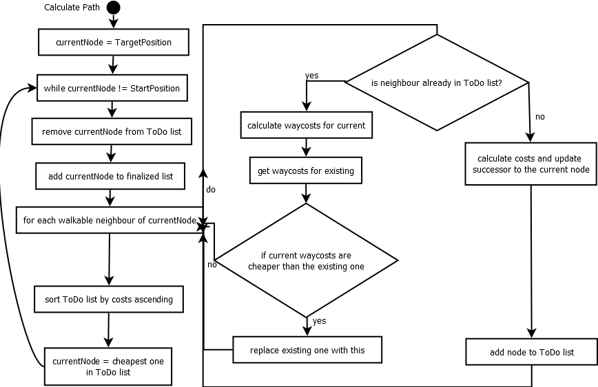

A* Pfadsuche by David Pertiller
In dieser Übung wurde das Thema Pfadplanung behandelt. Dafür wurde der A* Algorithmus zur Pfadfindung implementiert. Weiters wurde ein Gegner auf dem Spielfeld platziert. In dessen Umkreis werden die Kosten beeinflußt, wodurch Pfade, die im Umkreis des Gegners verlaufen, höhere Kosten erhalten. Mittels den Pfeiltasten kann der Gegner auf dem Spielfeld bewegt werden. Der beste Pfad wird stets aktualisiert und neu eingezeichnet, sowie die Kosten ausgegeben.
Die Ermittlung der Kosten erfolgt in der Methode „UpdateCostsAndSuccessor“ und ergibt sich aus der Summe folgender Werte:
1. Distanz vom aktuellen bis zum Startknoten
2. Rechne WegkostenFaktor zwischen aktuellen und vorhergehendem Kostenfaktor aus
3. Multipliziere Wegkosten mit der Wegbeschaffenheit (FieldType) des aktuellen Knotens
4. Gesamtweg = Summe dieser Wegkosten mit den Wegkosten des vorigen Knotens
5. Addiere Influenzkosten falls im Imfluenzradius des Feindes
6. Gesamtkosten = Gesamtweg + Distanz zum Startknoten + Influenz durch Feind
Die Distanzermittlung erfolgt nach der tatsächlich kürzest möglichen Wegbeschreitung, in der Annahme dass nicht nur links, rechts, rauf und runter, sondern auch diagonal gegangen werden kann. Diagonale Schritte schlagen mit 1.41 zu Buche, Schritte nach links, rechts, oben oder unten mit 1. Die maximal möglichen diagonalen Schritte werden vollständig ausgenutzt, der Rest des Pfad wird in gerader Richtung beschritten.
return 1.41f * diagonalWalkCount + 1.0f * directWalkCount;
Calculate Path im Detail:
